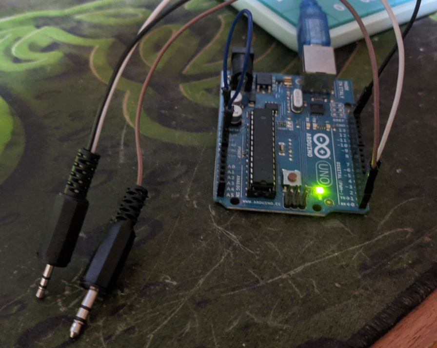
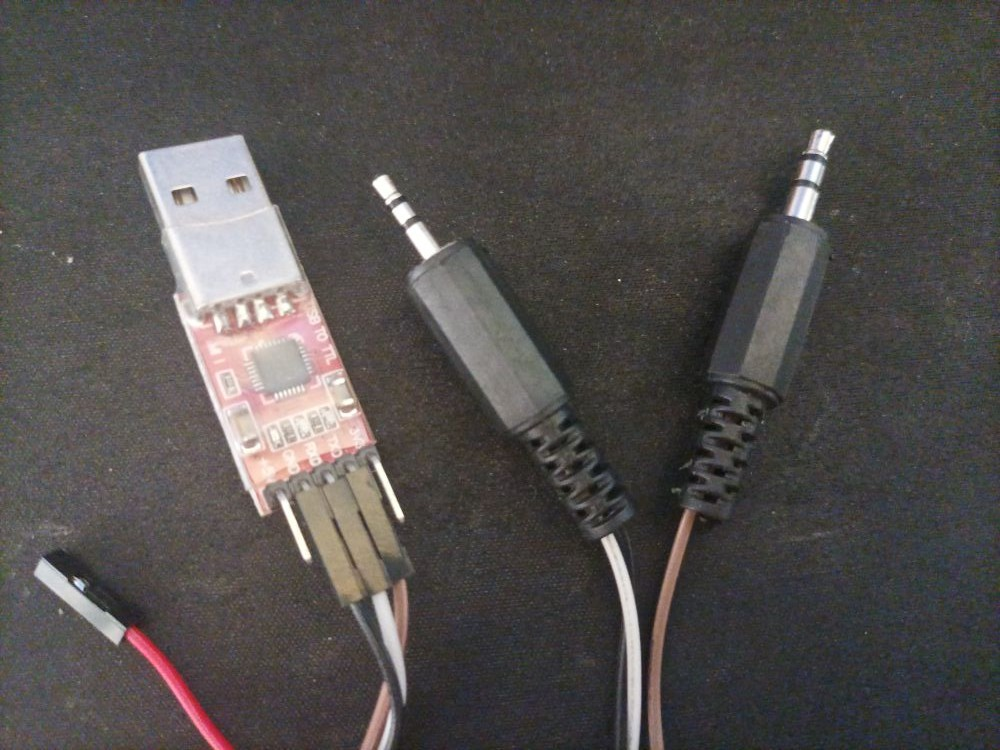

'Cable' de programación para Baofeng
Tanto el Baofeng UV5R que tengo como el UV82 se pueden programar con CHIRP usando un cable USB que tiene 2 terminales distintos del tipo jack. Un terminal se conecta a la entrada de micrófono del handy y la otra terminal a la salida de auricular.
Del jack más grueso, la base del pin es TX (RX en el Arduino/USB).
Del jack más grueso, la base es tierra (GND) y el del medio es RX (TX en el Arduino/USB)
El cable es muy básico y comprar uno no tiene mucho sentido salvo que no tengas ni un arduino ni un conversor USB-TTL.

Para el arduino la conexión es sencilla. El arduino (Arduino UNO en este caso) tiene un puerto serie integrado en los pins 0 y 1.
En el caso del Arduino hay que dejar constantemente el pin de reset a tierra para que el arduino no inicie el microcontrolador. Sólo vamos a usar la parte serie de la placa.

Para el caso del adaptador USB-Serie, es todo más directo aún. Se conecta Tierra (GND), Transmisión (TXD) y Recepción (RXD) desde el adaptador al cable armado.
Vale aclaración que en transmisiones serial los conectores van siempre cruzados. RX es el TX del otro dispositivo y TX es el RX.